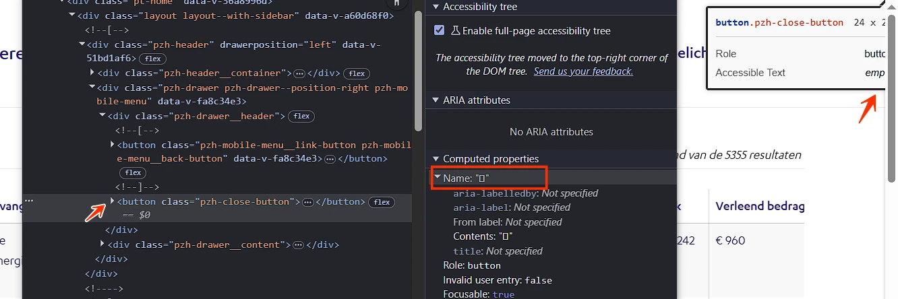
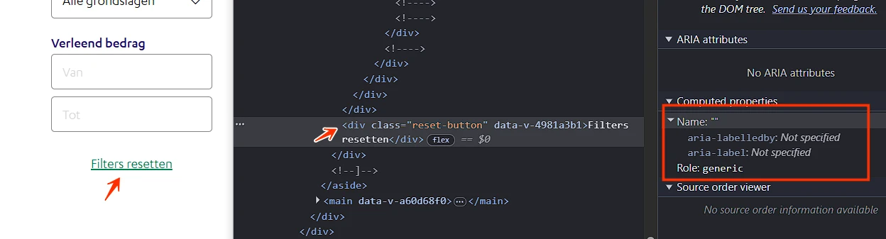
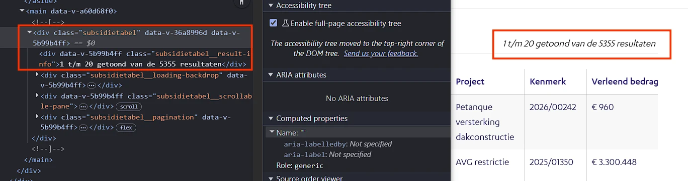
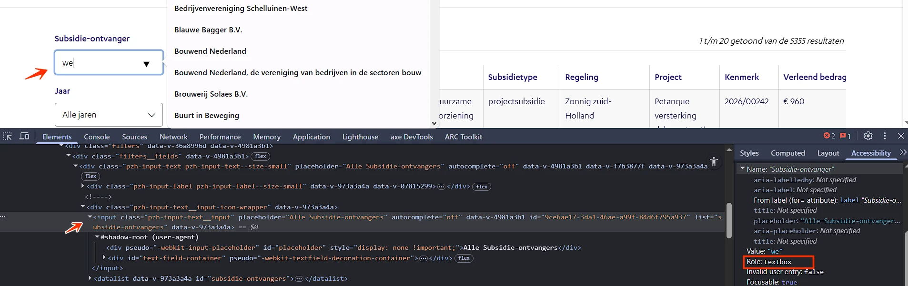

Audit digitale toegankelijkheid van website subsidieregister.zuid-holland.nl
Samenvatting
Wij hebben de website subsidieregister.zuid-holland.nl onderzocht tussen 6 en 20 mei 2026. Op dit moment is een deel van de succescriteria als voldoende beoordeeld. In dit rapport lees je welke punten nog verbetering behoeven en hoe deze kunnen worden aangepakt.
#1 - Meerdere pagina's hebben dezelfde paginatitel
Impact: MediumType: ContentWCAG: 2.4.2EN: 9.2.4.2
Alle pagina's van deze website hebben dezelfde tekst in het title-element: "Subsidieregister". Daardoor is de paginatitel niet uniek per pagina.
Wanneer meerdere pagina's dezelfde paginatitel hebben, kan dit verwarrend zijn voor bezoekers. De navigatie tussen pagina's wordt daardoor lastiger, vooral voor wie afgaat op de titelbalk of browser-tabs om pagina's van elkaar te onderscheiden.
User story
Ik gebruik een schermlezer. Wanneer meerdere pagina's in de browser open zijn, leest mijn schermlezer de titel van de pagina. Op deze manier kan ik tussen pagina's navigeren.
Oplossing:
Zorg ervoor dat het title-element van elke pagina uniek is en de inhoud van de betreffende pagina nauwkeurig beschrijft, bij voorkeur aangevuld met de naam van de organisatie.
Op alle pagina's van deze website ontbreekt het lang-attribuut op het html-element. Daardoor kan hulpsoftware de juiste taal van de pagina niet vaststellen en de inhoud niet correct voorlezen.
User story
Ik gebruik een schermlezer. Elke pagina moet zijn taal in de code aangeven met lang op het html-element. Zonder die instelling kiest mijn schermlezer de verkeerde stem en wordt de tekst onbegrijpelijk.
Oplossing:
Zorg ervoor dat de taal van de pagina is ingesteld op Nederlands (lang="nl"), zodat hulpsoftware de inhoud op de juiste manier kan voorlezen.
In de header staat een logo dat tegelijk een link is, zonder tekstalternatief. Het alt-attribuut ontbreekt.
Een logo is een informatieve afbeelding en heeft een tekstalternatief nodig. De alt-tekst moet de volledige tekst bevatten die in het logo zichtbaar is. Zo krijgen bezoekers die de afbeelding niet kunnen zien dezelfde informatie als alle anderen.
Deze bevinding raakt ook 4.1.2 (de link heeft geen toegankelijke naam), 2.4.4 (het doel van de link is niet vast te stellen) en 2.5.3 (de toegankelijke naam komt niet overeen met de zichtbare tekst "provincie Zuid-Holland" in het logo). Daardoor kan de link niet betrouwbaar met spraakbediening worden geactiveerd: bezoekers spreken de zichtbare tekst uit, terwijl de toegankelijke naam iets anders is.
User story
Als bezoeker met een schermlezer gebruik ik het logo om de website te herkennen. Het logo heeft een tekstalternatief nodig met alle zichtbare tekst erin. Zonder dat krijg ik niet dezelfde informatie als anderen.
Oplossing:
Voeg aan het logo een alt-attribuut toe met de zichtbare tekst van het logo.
#4 - Icoon "opent in nieuw browser-tab" heeft geen tekstalternatief
Impact: MediumType: ContentWCAG: 1.1.1EN: 9.1.1.1
In de footer hebben sommige links een icoon dat aangeeft dat de link in een nieuw browser-tab opent, bijvoorbeeld bij "Cookies". Deze iconen hebben geen tekstalternatief, waardoor bezoekers met een schermlezer niet weten dat de link een nieuw tab opent. Informatie over het openen van links in een nieuw tab of venster moet toegankelijk worden aangeboden.
User story
Als bezoeker met een schermlezer moet ik horen dat een link een nieuw browser-tab opent. Anders weet ik niet dat ik mijn huidige tab verlaat en raak ik de context kwijt.
Oplossing:
Voeg een tekstalternatief toe aan de iconen (bijvoorbeeld via een aria-label) dat duidelijk maakt dat de link in een nieuw tab of venster opent. Voeg de informatie dat de link een nieuw browser-tab opent toe als visueel verborgen tekst die wel toegankelijk is voor schermlezers.
#5 - Knop in de header heeft geen toegankelijke naam
Impact: GrootType: TechniekWCAG: 4.1.2EN: 9.4.1.2

In de header staan knoppen zonder toegankelijke naam. Hierdoor kunnen bezoekers met een schermlezer niet vaststellen wat de functie van de knop is.
Hetzelfde probleem komt voor op het kleine scherm in het mobiele menu.
User story
Als bezoeker met een schermlezer of spraakbediening moet ik knoppen kunnen herkennen. Elke knop heeft een toegankelijke naam nodig. Zonder die naam leest mijn schermlezer alleen "knop" voor en weet ik niet wat er gebeurt als ik de knop activeer.
Oplossing:
Geef de knoppen een toegankelijke naam. Dit kan op verschillende manieren:
Zichtbaar label: plaats een zichtbare tekst naast of in de knop.
aria-label: voeg het aria-label-attribuut toe aan het button-element met een beschrijvende tekst.
alt-tekst: als de knop een afbeelding gebruikt, geef die afbeelding een beschrijvende alt-tekst (bijvoorbeeld alt="Zoeken").
In de header staan links zonder toegankelijke naam. Daardoor kunnen bezoekers met een schermlezer niet vaststellen wat het doel of de bestemming van de link is. Elke link moet een toegankelijke naam hebben die de bestemming duidelijk beschrijft.
Hetzelfde probleem komt voor op het kleine scherm in het mobiele menu.
User story
Als bezoeker met een schermlezer moet ik de bestemming van elke link kunnen vaststellen. Elke link heeft een toegankelijke naam nodig. Nu hoor ik alleen "link", zonder verdere informatie.
Oplossing:
Geef deze links een toegankelijke naam, bijvoorbeeld via een beschrijvende linktekst, een aria-label of een andere passende techniek.
#7 - Onzichtbaar element krijgt toetsenbordfocus
Impact: GrootType: TechniekWCAG: 2.4.3EN: 9.2.4.3
In de header komt de toetsenbordfocus na de link "Toelichting" terecht op een onzichtbaar interactief element. Onzichtbare interactieve elementen mogen geen onderdeel zijn van de focusvolgorde. Dit kan leiden tot onbedoelde activering en verwarring, vooral voor bezoekers die met het toetsenbord navigeren.
Hetzelfde probleem komt voor op het kleine scherm in het mobiele menu.
User story
Als bezoeker met een toetsenbord of schermlezer moet ik zien waar de toetsenbordfocus zich bevindt. De focus mag alleen terechtkomen op zichtbare interactieve elementen. Nu landt de focus op verborgen knoppen en activeer ik per ongeluk onzichtbare elementen.
Oplossing:
Zorg ervoor dat alleen zichtbare interactieve elementen toetsenbordfocus kunnen krijgen en dat de focusvolgorde een logische volgorde volgt.
#8 - Mobiel menu: knop met x-icoon mist tekstalternatief
In het mobiele menu op een klein scherm staat een knop met een x-icoon. Deze klikbare knop heeft geen tekstalternatief. Wanneer een knop alleen uit een afbeelding bestaat, moet het tekstalternatief van de afbeelding de functie van de knop beschrijven.
User story
Als bezoeker met een schermlezer herken ik de functie van een knop via de toegankelijke naam. Zonder die naam leest mijn schermlezer alleen "knop" voor en weet ik niet wat de knop doet.
Oplossing:
Voeg een tekstalternatief toe dat de functie van de knop beschrijft. Dit kan op de volgende manieren:
aria-label: voeg een aria-label-attribuut toe aan het button-element met een korte beschrijving van de functie (bijvoorbeeld "Menu sluiten").
Visueel verborgen tekst: plaats beschrijvende tekst in het button-element en verberg die visueel met CSS, zodat schermlezers de tekst nog wel voorlezen.
#9 - Bij 400% zoom verschijnt een horizontale scrollbalk
Op deze pagina is een horizontale scrollbalk aanwezig bij 400% zoom en delen van de tekst zijn niet zichtbaar, bijvoorbeeld "Subsidieregister".
Horizontaal scrollen op de hele pagina is niet toegestaan, ook niet als de viewport is ingesteld of ingezoomd op 320 CSS-pixels breed (voor verticale inhoud) of 256 CSS-pixels hoog (voor horizontale inhoud). Zorg ervoor dat de tekst binnen het scherm past. Alleen als scrollen in beide richtingen echt nodig is voor de betekenis of het gebruik van de inhoud mag het wel. Uitzonderingen zijn tabellen, betekenisvolle afbeeldingen en kaarten. Deze moeten leesbaar blijven, dus binnen deze elementen mag je wel scrollen.
User story
Als bezoeker met een visuele beperking zoom ik in tot 400% of lees ik de website op 320 pixels breed. Ik heb de inhoud nodig in één kolom zonder horizontaal scrollen. Anders moet ik bij elke regel heen en weer scrollen.
Oplossing:
Controleer of horizontaal scrollen echt nodig is. Zo niet, zorg er dan voor dat bij inzoomen geen horizontale scrollbalk meer verschijnt.
Op deze pagina staat een groep invoervelden onder de tekst "Verleend bedrag". Visueel vormen deze velden een groep, maar die relatie is niet vastgelegd in de HTML. Daardoor kan hulpsoftware de samenhang tussen de elementen niet bepalen.
User story
Als bezoeker met een schermlezer moet ik bij elkaar horende invoervelden samen aangeboden krijgen, met een gezamenlijke naam. Anders begrijp ik niet waar de groep over gaat en hoe de velden zich tot elkaar verhouden.
Oplossing:
Plaats de groep invoervelden binnen een fieldset-element. Geef het fieldset een legend-element met de tekst "Verleend bedrag" (of een meer beschrijvend label) als naam van de groep. Hiermee leg je de relatie tussen het label en de bij elkaar horende elementen vast.
#11 - Kleurcontrast tussen tekst en achtergrond is minder dan 4,5:1
In de zijbalk, onder de tekst "Verleend bedrag", staan invoervelden waarvan de placeholdertekst dienstdoet als label. De placeholdertekst is lichtgrijs (#D5D5D5) op een witte achtergrond. De contrastverhouding is te laag: 1,5:1.
User story
Als bezoeker met een visuele beperking kan ik bleke tekst niet lezen. Voor kleine, niet-vetgedrukte tekst heb ik minimaal 4,5:1 contrast nodig. Anders moet ik moeite doen om de tekst te lezen of sla ik hem over.
Oplossing:
Omdat deze tekst kleiner is dan 24px en niet vetgedrukt is, moet het contrast minimaal 4,5:1 zijn. Verhoog het contrast van de placeholdertekst tot ten minste deze waarde.
#12 - Placeholdertekst wordt gebruikt als label voor invoerveld
In de zijbalk, onder de tekst "Verleend bedrag", staan invoervelden met placeholdertekst. Een blijvend zichtbaar label ontbreekt; de placeholdertekst doet dienst als label.
Invoervelden hebben een label nodig dat altijd zichtbaar is. Placeholdertekst kan deze rol niet vervullen, omdat die verdwijnt zodra de bezoeker begint te typen.
User story
Als bezoeker met een schermlezer of een cognitieve beperking heb ik bij elk invoerveld een blijvend zichtbaar label nodig. Placeholders verdwijnen zodra ik typ en dan weet ik niet meer waar het veld voor bedoeld was.
Oplossing:
Voeg een permanent zichtbaar label toe bij het invoerveld.
#13 - Knop "Filters resetten" heeft niet de juiste rol
Impact: GrootType: TechniekWCAG: 4.1.2EN: 9.4.1.2

Op deze pagina, in de zijbalk, is het element met de tekst "Filters resetten" bedoeld als knop, maar heeft het niet de juiste toegankelijke rol. Hierdoor herkennen schermlezers het element niet als knop, waardoor het ontoegankelijk is voor blinde bezoekers. Zij weten niet dat het element interactief is en aangeklikt kan worden.
User story
Als bezoeker met een schermlezer, spraakbediening of toetsenbord herken ik knoppen aan hun rol. Elk klikbaar element heeft de button-rol nodig, via een <button>-element of role="button". Zonder die rol wordt het element niet als knop aangekondigd en kan ik het niet bedienen.
Oplossing:
Zorg dat de knop de juiste rol krijgt. Dit kan op twee manieren:
Gebruik een <button>-element. Dat geeft automatisch de juiste rol.
Voeg role="button" toe als toch een ander element gebruikt wordt (dit heeft niet de voorkeur).
#14 - Knop "Filters resetten" kan niet met spatiebalk en Enter worden bediend
Impact: GrootType: TechniekWCAG: 2.1.1EN: 9.2.1.1
Op deze pagina, in de zijbalk, is het element met de tekst "Filters resetten" niet met het toetsenbord te bedienen. De knop kan niet worden geactiveerd met de spatiebalk of de Enter-toets. Alle knoppen moeten met zowel de spatiebalk als de Enter-toets bediend kunnen worden. Dit is standaard toetsenbordgedrag bij knoppen en essentieel voor bezoekers die op toetsenbordnavigatie zijn aangewezen.
User story
Als bezoeker met een toetsenbord of schermlezer bedien ik knoppen met Enter of spatiebalk. Elke knop moet op beide toetsen reageren. Nu reageert deze knop alleen op een muisklik en kan ik de functie niet bereiken.
Oplossing:
Zorg dat de knop met zowel de spatiebalk als de Enter-toets bediend kan worden.
#15 - Tekst van paginatieknoppen is onduidelijk
Impact: MediumType: ContentWCAG: 2.4.6EN: 9.2.4.6
Onder de zoekresultaten staan paginatieknoppen. De toegankelijke namen van de knoppen — "1", "2", "3" enzovoort — beschrijven de functie van de knop niet voldoende.
User story
Als bezoeker met een schermlezer of spraakbediening heb ik de functie van elke paginatieknop in de code nodig. Voeg verborgen tekst of een aria-label toe, zoals "pagina 2". Nu hoor ik alleen losse cijfers.
Oplossing:
Voeg context toe aan de tekst van de paginatieknoppen, zodat de functie van elke knop duidelijk wordt. Dit kan via visueel verborgen tekst of een aria-label, bijvoorbeeld "Pagina 2". Zo begrijpen alle bezoekers, ook schermlezergebruikers, dat deze knoppen de volgende pagina met zoekresultaten openen.
#16 - Huidige pagina in paginering wordt alleen visueel aangegeven
Impact: GrootType: TechniekWCAG: 1.3.1EN: 9.1.3.1
Op deze pagina, onder de zoekresultaten, wordt de huidige pagina in de paginering alleen visueel aangegeven (bijvoorbeeld met een rand). Deze informatie staat niet in de code, waardoor schermlezers niet kunnen vaststellen welke pagina op dit moment actief is.
User story
Als bezoeker die de pagina niet kan zien, weet ik niet welke pagina in de paginering momenteel actief is. Als deze informatie niet in de HTML aanwezig is, wordt deze niet voorgelezen.
Oplossing:
Voeg aria-current="page" toe aan het element van de huidige pagina in de paginering. Hiermee wordt programmatisch aangegeven welke pagina actief is en is de informatie beschikbaar voor hulpsoftware. Als het huidige item als statische tekst wordt weergegeven in plaats van als knop, is dat ook voldoende.
#17 - Paginering: pijl-iconen op knoppen missen tekstalternatief
De paginering bevat knoppen met pijl-iconen. Deze klikbare iconen hebben geen tekstalternatief. Wanneer knoppen alleen uit een afbeelding bestaan, moet het tekstalternatief van de afbeelding de functie van de knop beschrijven.
User story
Als bezoeker met een schermlezer of spraakbediening herken ik knoppen met iconen via hun tekstalternatief. Elke icon-knop heeft een toegankelijke naam nodig. Zonder die naam leest mijn schermlezer alleen "knop" voor en weet ik niet wat de knop doet.
Oplossing:
Voeg een tekstalternatief toe dat de functie van de knop beschrijft. Dit kan op de volgende manieren:
aria-label: voeg een aria-label-attribuut toe aan het button-element met een korte beschrijving van de functie (bijvoorbeeld "Volgende pagina" of "Vorige pagina").
Visueel verborgen tekst: plaats beschrijvende tekst in het button-element en verberg die visueel met CSS, zodat schermlezers de tekst nog wel voorlezen.
#18 - Aangepaste zoekresultaten worden niet voorgelezen door schermlezers
Impact: GrootType: TechniekWCAG: 4.1.3EN: 9.4.1.3

Op deze pagina passen filters de zoekresultaten aan en verschijnt een melding zoals "1 t/m 20 getoond van de 5355 resultaten" zonder dat de pagina herlaadt. Deze melding is een statusbericht, maar wordt niet voorgelezen door schermlezers. Statusberichten moeten automatisch worden voorgelezen wanneer ze verschijnen of veranderen.
User story
Ik luister naar de website met mijn schermlezer. Als mijn zoekopdracht resultaat heeft opgeleverd, moet ik het kunnen horen.
Oplossing:
Voeg aria-live toe aan het element met de melding "1 t/m 20 getoond van de 5355 resultaten". Daarmee lezen schermlezers de melding automatisch voor wanneer deze verschijnt of verandert.
#19 - Invoerveld "Subsidie-ontvanger" met suggestielijst heeft niet de juiste rol
Impact: GrootType: TechniekWCAG: 4.1.2EN: 9.4.1.2

Het invoerveld "Subsidie-ontvanger" toont tijdens het typen suggesties in een uitklaplijst en functioneert daarmee als een combobox. De bijbehorende rol ontbreekt echter op het invoerveld.
User story
Ik luister naar de website met mijn schermlezer. Als een zoekveld een lijst met suggesties toont, moet ik deze inhoud kunnen horen. De schermlezer kondigt aan wat er staat zodat ik deze nieuwe inhoud kan begrijpen en bedienen.
Oplossing:
Voeg de volgende attributen toe om dit invoerveld toegankelijk te maken als combobox:
role="combobox": voeg dit attribuut toe aan het invoerveld om aan te geven dat het een combobox is.
aria-expanded: voeg dit attribuut toe aan het invoerveld om de status van de suggestielijst aan te geven. Stel aria-expanded="true" in als de lijst zichtbaar is en aria-expanded="false" als de lijst verborgen is.
Onze rapporten zijn anders. Bij het bespreken van de gevonden problemen volgen wij niet de structuur van de norm, maar die van jouw website of app. Hierdoor kun je gewoon per pagina of scherm aan de slag gaan. Wel zo makkelijk! Je vindt verderop een overzicht van alle pagina’s met problemen.
We geven je bij elk gevonden issue een paar voorbeelden, maar niet een complete lijst. Controleer zelf of het probleem ook nog op andere plekken voorkomt. Zie het rapport als een leidraad.
Gebruikte norm
Dit onderzoek laat zien in hoeverre de website op dit moment voldoet aan WCAG 2.2, niveau A en AA. WCAG staat voor Web Content Accessibility Guidelines. Dit is de internationale norm voor digitale toegankelijkheid. De Europese norm EN 301 549 bevat alle eisen van WCAG op niveau A en AA.
In dit rapport hebben we korte beschrijvingen van de succescriteria uit de norm opgenomen, met een algemene uitleg erbij. Wil je ze helemaal lezen? Bekijk dan de documentatie van WCAG.
Gebruikte onderzoeksmethode
We gebruiken de onderzoeksmethode WCAG-EM van het W3C. Het proces ziet er als volgt uit:
vaststellen wat binnen en buiten scope valt
vaststellen welke technologieën zijn gebruikt
steekproef (sample) samenstellen
steekproef onderzoeken
gevonden issues beschrijven
Het grootste deel van het onderzoek doen we met de hand. Voor een deel van de toegankelijkheidseisen gebruiken we automatische tools als ondersteuning, zoals axe-core en Chrome Developer Tools.
Belangrijk om te weten
Dit rapport helpt je om de toegankelijkheid van je website te verbeteren. Maar let op: het is geen definitieve, volledige lijst van alle aanwezige toegankelijkheidsproblemen. Dat zit zo:
Het is een steekproef
Ten eerste is het onderzoek gebaseerd op een steekproef. Die is op een betrouwbare manier genomen, en de meeste problemen zullen daardoor zeker aan het licht komen. Toch kan een probleem net buiten de steekproef vallen. Bij een volgend onderzoek kan het wel ontdekt worden.
Op basis van falsificatie
We beoordelen vanuit het principe van falsificatie. Dat houdt in dat we proberen te bewijzen dat iets niet waar is, in plaats van te bevestigen dat het klopt. ‘Voldoet’ betekent daarom dat we geen reden hebben gevonden om een punt af te keuren. Maar als we later wél een reden vinden, kan het alsnog worden afgekeurd.
Voortschrijdend inzicht
Het komt voor dat de beoordeling van een succescriterium op detailniveau verandert. De norm beschrijft namelijk niet élk mogelijk scenario. Samen met andere onderzoeksbureaus overleggen we hoe we met bepaalde situaties omgaan. Zo kan iets dat nu wordt afgekeurd, soms bij een volgend onderzoek worden goedgekeurd en andersom.
Oplossen leidt tot nieuw probleem
Ten slotte kan het gebeuren dat bij het oplossen van een probleem onbedoeld een nieuw toegankelijkheidsprobleem ontstaat. Dat komt dan bij een volgend onderzoek pas naar voren.
Hoe werkt dit rapport?
Bevindingen bekijken en filteren
Alle gevonden toegankelijkheidsproblemen staan onder Gevonden problemen. Je kunt de bevindingen filteren op:
Impact (Groot, Medium, Klein, Advies) — hoe ernstig is het probleem voor de gebruiker?
Type (Content, Techniek) — moet de inhoud of de techniek worden aangepast?
Status (Open, Opgelost) — welke problemen zijn al verholpen?
Voortgang bijhouden
Je kunt je voortgang op twee manieren bijhouden:
CSV-export — exporteer alle bevindingen als CSV-bestand en laad het in een (online) spreadsheet om met je team samen te werken.
Jira-export — exporteer alle bevindingen als Jira-compatibel CSV-bestand. Importeer het via Jira > Issues > Import issues from CSV. Bevindingen worden aangemaakt als bugs met prioriteit op basis van impact.
Registreer in de browser — activeer deze optie om per bevinding bij te houden of het is opgelost. Je voortgang wordt opgeslagen in je browser. Niemand anders kan je resultaat zien. Let op: de voortgang is gekoppeld aan je browser. Als je een andere browser of een ander apparaat gebruikt, begint de telling opnieuw.
Plan van aanpak — download een geprioriteerd plan van aanpak om de gevonden problemen stap voor stap op te lossen. Dit is beschikbaar bij audits vanaf maart 2026.
Link naar een specifieke bevinding delen
Bij elke bevinding verschijnt een link-icoon wanneer je er met de muis overheen gaat. Klik op dit icoon om de directe link naar die bevinding te kopiëren. Je kunt deze link plakken in een e-mail of chatbericht, bijvoorbeeld om een vraag te stellen aan Proper Access over een specifiek punt.